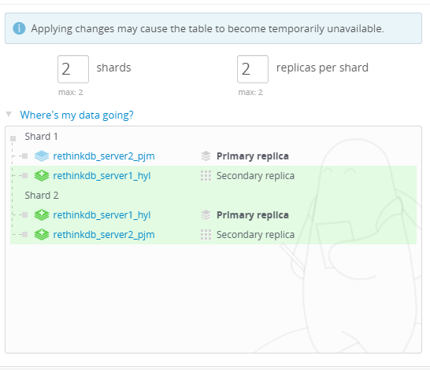

Setting up a sharded RethinkDB cluster on CentOS or Fedora, NoSQL, scaling
Set Up a Sharded RethinkDB Cluster - CentOS, Fedora
Difficulty: 3
Time: 20 minutes
RethinkDB, a NoSQL database, is the first open-source, scalable JSON database built from the ground up for real-time web applications. It's designed specifically to push data to applications in real time, dramatically reducing the time and effort necessary to build scalable real-time applications. In this article, we'll help you build a RethinkDB cluster, import a database onto it, and make it secure.
Common Steps
Even though RethinkDB has a peer-to-peer architecture we will still have a Primary server act as the "brain". As we will see later, being the brain doen't mean being the boss. All "non-brain" servers will be thought of as secondary. Our server nomenclature will therefore use the highly creative naming convention of
server1 to refer to the primary and server2 to refer to the secondary. Any tasks that apply to both are included in this section.
Install the RethinkDB server
- Add the RethinkDB yum repository to your existing list of repositories:
sudo wget http://download.rethinkdb.com/centos/6/`uname -m`/rethinkdb.repo -O /etc/yum.repos.d/rethinkdb.repo
- Install rethinkDB.
sudo yum install rethinkdb
Configure server1
- Make a copy of the RethinkDB configuration file using the default.
sudo cp /etc/rethinkdb/default.conf.sample /etc/rethinkdb/instances.d/instance.conf
- Open the RethinkDB configuration file.
sudo vim /etc/rethinkdb/instances.d/instance.conf
- Locate the line starting with
server-name (most likely the last line in the file). Uncomment this line and give your server a name.
server-name=server1
Note that this is the machine name, NOT an IP address or domain name.
- To make Rethink listen on all networks, find this line.
bind=127.0.0.1
And directly underneath it, add this.
bind=all
- Save the configuration changes made and close the file.
- Restart RethinkDB with the new build configuration.
rethinkdb --bind all
Configure server2, Part 1
- Make a copy of the RethinkDB configuration file using the default.
sudo cp /etc/rethinkdb/default.conf.sample /etc/rethinkdb/instances.d/instance.conf
- Open the RethinkDB configuration file.
sudo vim /etc/rethinkdb/instances.d/instance.conf
- Locate the line starting with
server-name (most likely the last line in the file). Uncomment this line and give your server a name.
server-name=Server2
Note that this is the machine name, NOT an IP address or domain name.
- To make Rethink listen on all networks, find this line.
bind=127.0.0.1
And directly underneath it, add this.
bind=all
- Save the configuration changes made and close the file.
- Start RethinkDB on server2.
rethinkdb --bind all
- Using a browser, navigate to the RethinkDB management console on port 8080
http://Server2 IP address or domain name:8080
- Select "Tables" from the main menu. A list of all of your databases will be displayed. Since this is a new instance, only the test database will be listed. Delete it. This will avoid collisions with the test database on server1
Configure server2, Part 2
- On server2, stop rethinkdb by typing ^C (hold down the ctrl key while typing "c")
- Reopen the configuration file.
sudo vim /etc/rethinkdb/instances.d/instance.conf
-
To connect this server to server1, find this line.
# join=example.com
Directly underneath it, add this.
join=IP Address or domain name of Server1:29015
This tells server2 it belongs to a cluster and the "brain" of that cluster is server1.
-
Save and close the file.
- Start RethinkDB on server2.
rethinkdb --join IP Address or domain name of Server1 --bind all
Verify your cluster
- Using a browser, navigate to the RethinkDB management console on server1 (RMC1).
http://Server1 IP address or domain name:8080
- Using a new window in your browser, navigate to the RethinkDB management console on server2 (RMC2).
http://Server2 IP address or domain name:8080
- From RMC2, select "Tables" from the main menu. A list of all of your databases will be displayed. Since server2 is now in a cluster with server1, the test database will be listed.
This is not the one you deleted, it's the one from server1.
- Use RMC2 to create a new database.
- Server1 is the "brain" not the boss. Use RMC1 to verify you can see the new database created on server2.
- Use RMC1 to create a new database.
- Toggle over to RMC2. The database you created on RMC1 appears in the list of databases.
Sharding
RethinkDB allows you to shard and replicate your cluster on a per-table basis. You can control the sharding settings through the web management console.
When using the web management console, you can perform sharding simply by specifying the number of shards you want and, based on the data available, RethinkDB will determine the best split points to maintain balanced shards.
To shard your data:
- Go to the table view (Tables > table name).
- Click the Reconfigure button.
- Set the number of shards and replicas you want.
- Click the Apply Configuration button.
In addition to the options in the web management console, ReQL commands for table configuration allow scripting capability, distributing replicas for individual tables across user-defined groups of servers using server tags. All these functionalities can be achieved through ReQL commands.
There are three primary commands for changing sharding in ReQL:
table_create : Specify initial values of shards and replicas.
reconfigure : Change the values of shards and replicas.
rebalance : Used to rebalance table shards.

Advanced configuration
The following describes advanced configuration that cannot be performed through the web interface.
Server tag
All servers in a RethinkDB cluster may be given zero or more tags that can be used in table configurations. This is used to map replicas to servers specified by tags. You can set a tag through the following command:
rethinkdb --server-tag us --server-tag us_west
If no tags are specified on startup, the server will start with the default tag (default). When servers are tagged, you can use the tags in the reconfigure command.
If you want to assign three replicas of the user's table to us_1 and two to us_2, use the following command:
r.table('users').reconfigure(shards=2, replicas={'us_1':3,
'us_2':2}, primary_replica_tag='us_2').run(conn)
Write acknowledgements and durability
Write acknowledgements and write durability are two other settings that can't be configured or managed through the web management console or reconfigure command. They can be configured only by editing table table_config for each individual table.
The write acknowledgement setting for a table controls when the cluster acknowledges a write request as completed. There are two possible settings:
majority: The cluster sends the acknowledgement when the majority of replicas have acknowledged it. This is the default.
single: The cluster sends the acknowledgement when any replica has acknowledged it.
Below is an example:
r.db('rethinkdb').table('table_config').get(
'31c92680-f70c-4a4b-a49e-b238eb12c023').update(
{"write_acks": "single"}).run(conn)
The durability setting for a table controls when writes are committed. They include both hard and soft mode:
- In hard mode, writes are committed to disk before acknowledgements are sent.
- In soft mode, writes are acknowledged immediately upon receipt. This is much faster.
Commonly Used ReQL Commands
Merge
With merge command, you can merge two or more objects together and construct a new object which has properties of all objects.
Command Syntax:
singleSelection.merge([object | function, object | function, ...]) -> object
object.merge([object | function, object | function, ...]) -> object
sequence.merge([object | function, object | function, ...]) -> stream
array.merge([object | function, object | function, ...]) -> array
Example:
r.table('everyday').get('john').merge(
r.table('drink').get('chocolate'),
).run(conn, callback)
Merge command can be also used to modify nested objects within the objects.
r.expr({weapons : {sword : {dmg : 9, length : 20}}}).merge(
{weapons : r.literal({knife : {dmg : 3, length : 5}})}).run(conn, callback)
Split
Split command is used to split a string into sub strings.
Command Syntax:
string.split([separator, [max_splits]]) -> array
Example: Split a string to characters
r.expr("client").split("").run(conn, callback)
Result:
["c", "l", "i", "e", "n", "t"]
Example: Split on whitespace.
r.expr("lets do together").split().run(conn, callback)
Result:
["lets", "do", "together"]
Pin
You can use this command to move the shard from one server to another machine.
Command Syntax:
pin shard TABLE SHARD-RANGE --master MACHINE-NAME
Example:
pin shard test.tester -inf-A --master rethinkdb_server2
Conclusion
In this article, you learned the steps to set up a sharded RethinkDB cluster on CentOS or Fedora servers.